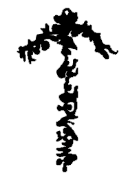
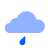
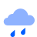
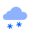
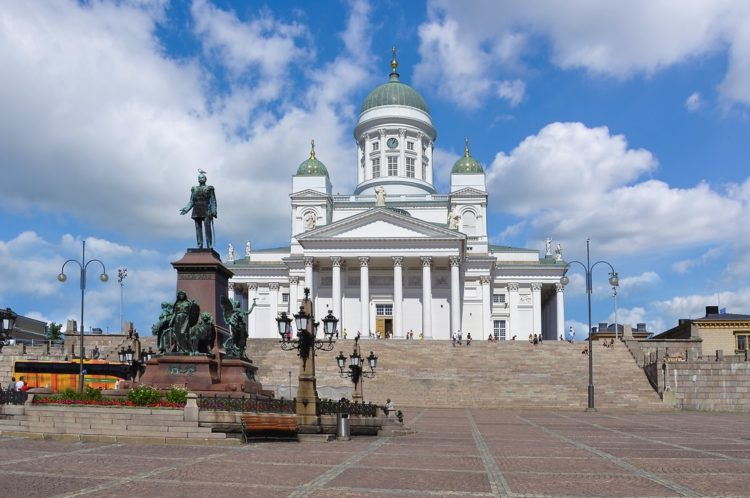
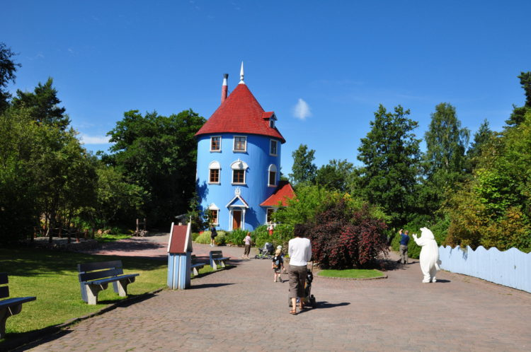
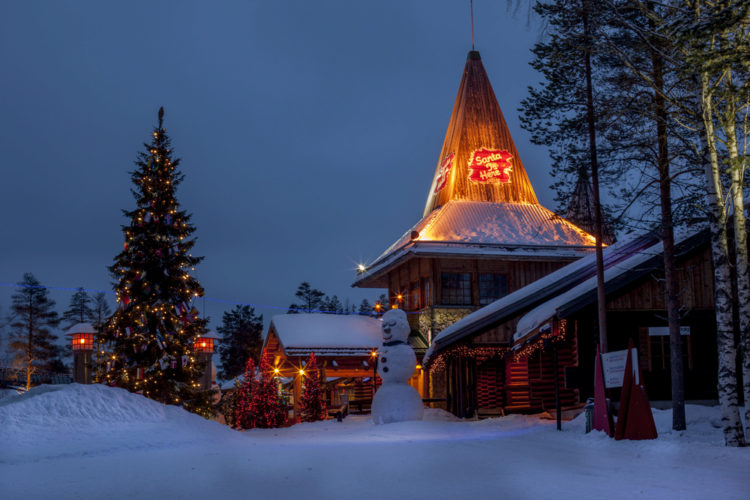

Страны мечты Страны мечты Страны мечты Страны мечты Страны мечты
| Главная | Дания | Норвегия | Финляндии | Швеция | Источники |
|---|
| Этимология | История | Георграфия и климат | Достопримечательности |
|---|
Название страны в русском и многих языках происходит от шведского Finland («земля охотников» — от древнескандинавского fin «охотник», и шведского land — «земля, страна»). В Саге об Инглингах (XIII век), написанной на древнеисландском языке, упоминается топоним Finnland.
Финское название страны — Suomi. Впервые оно упоминается на страницах новгородских летописей в форме Сумь (с начала XII века).
Существует несколько версий происхождения этого названия:
Финляндия – государство, находящееся на севере Европы, и граничащее со Швецией и Россией. Несмотря на то, что современная Финляндия несомненно является частью западного мира, её совместное прошлое и культурные связи с Россией до сих пор оказывают существенное влияние на культуру страны и быт людей.
По предположениям ученых, первые племена на территории современной Финляндии появились более 10 тысяч лет назад. В основном они занимались охотой, разведением оленей и другого скота, а также рыболовством. Подлинная история появления поселений неизвестна, но историки предполагают, что они пришли с Востока.
Достоверных сведений о том, что было на территории страны с древних времен и до раннего средневековья нет. Страну заселяли несколько разобщенных племен с разными языками, укладом жизни и культурными особенностями.
Однако, богатая лесами территория со временем начала привлекать внимание соседей. Самыми настойчивыми из них оказались викинги, которым эта территория нужна была для завоевания Новгородской Руси. Этот период стал одним из самых важных для формирования финской государственности.
В результате нескольких крестовых походов вся южная часть современной Финляндии оказалась во власти шведов, под управлением которых финские народы находились до начала XIX века. В 1284 году Финляндия получила статус герцогства в составе Шведского Королевства.
Большое значение на формирование Финляндии как государства оказало правление шведского короля Густава Васа с 1523 по 1560 годы. Именно в этот период была основана столица Финляндии – город Хельсинки, и была разработана финская письменность. В 1581 году страна получила статус Великого княжества, а её население составляло около 300 тысяч человек.
Значительных перемен в жизни финнов не было до начала XVIII века до Северной войны между Швецией и Россией. Шведы на тот момент имели одну из сильнейших армий Европы и почти не знали поражений. Несмотря на это, России удалось одержать верх над ними и захватить большую часть территории Финляндии. В 1741 году Швеция попыталась дать ответный удар, но вновь потерпела поражение. А уже в 1743 году между странами был заключен мирный договор, по которому России отошла только часть Финляндии.
Спустя полвека в 1808 году Россия одержала окончательную победу над шведами и присоединила всю Финляндию. В 1809 году император Александр I на сейме в городе Борго гарантировал финнам сохранение конституции и законов. В итоге территория получила название Великое княжество Финляндское и вошла в состав Российской Империи на правах автономии. Изначально столицей княжества стал Турку, но в 1812 году Александр I перенес столицу в город Хельсинки. В тот период Финляндии уделяется особое внимание со стороны российского руководства, что способствует росту экономики.
Таким образом Финляндия жила до начала XX века, пока на территории всей России не начинаются массовые волнения. После событий 1905 года финский народ присоединяется к забастовкам. В этот период Финляндия претерпела важные государственные изменения. В автономии появляется избираемый населением однопалатный парламент. Причем право голоса получают и женщины, что в то время было редкостью даже для развитых европейских стран. К 1917 году население Финляндии увеличивается до 3 миллионов человек.
Осенью 1917 года происходит одно из важнейших событий как российской, так и мировой истории – Октябрьская революция. Финляндия объявляет о независимости, чему не препятствует новое руководство России. Граница между странами утверждается в 30 км от Петрограда.
В то время народу Финляндии были близки идеи социализма и страна провозгласила себя Социалистической рабочей республикой. Однако, это продолжается недолго и уже в 1918 году страна становится нейтральной.
Следующим значительным событием в истории страны становится война с СССР в 1939, длившаяся 105 дней. Согласно мирному договору, часть земель переходит Советскому Союзу.
Во Второй Мировой войне финны принимают сторону Третьего рейха в надежде на реванш с СССР. В 1940 году в стране размещаются фашистские войска, а летом 1941 года Финляндия объявляет войну Советскому Союзу. В 1944 году Финляндия заключает перемирие с СССР и Великобританией и меняет сторону конфликта. После войны в 1947 году Финляндия, осознавая свою вину, подписывает договор с СССР, согласно которому Советскому Союзу передаётся часть финских земель. Также по договору были предусмотрены репарации в 300 миллионов долларов.
После Второй Мировой войны экономика страны начала бурно развиваться. Отношения с СССР окончательно наладились, размер репараций был уменьшен в два раза, а в 1948 году между странами был подписан договор о дружбе и сотрудничестве.
В 1990-е годы после распада СССР экономика Финляндии переживала глубокий экономический кризис. Закрылись многие заводы и фабрики. Некоторые отрасли экономики оказались на грани исчезновения. Значительную помощь в проведении реформ и выхода страны из кризиса оказал Европейский союз, на членство в котором Финляндия подает заявку в 1992 году.
В 1995 году страна становится одним из членов Европейского союза и вводит евро в качестве национальной валюты.
Тесная интеграция со странами ЕС и правильная экономическая политика привели к тому, что на сегодняшний день Финляндия является одним из самых развитых и богатых государств в мире.
Финляндия омывается Финским и Ботническим заливом Балтийского моря; в составе Финляндии — Аландские о-ва. Площадь 337 тыс км2. Население 5224,8 млн человек (2004), главным образом финны (ок. 94%), шведы. Городское население 62,5% (1993). Государственные языки — финский и шведский. Большинство верующих — лютеране. Столица — Хельсинки. Другие крупные города: Турку.
Берега Ботнического и Финского зал. Балтийского м. низкие, часто со шхерами. Преобладают холмисто-моренные равнины с многочисленными выходами скальных пород. На северо-западе — восточная оконечность Скандинавских гор, высота до 1365 м.
Отличительной чертой финского климата является сочетание теплых лет и холодных зим. Средняя температура в Хельсинки расположенном на юге Финляндии составляет в июле +17,2 °C и −4,2 °C в январе, в Соданкюля на севере Финляндии +14,3 °C в июле и −14,1 °C в январе. В летний период температура на востоке и юге страны может иногда подниматься до +30 °C.
Зимой практически по всей стране стоят сильные морозы до −20 °C и более. Самые южные части Финляндии покрыты снегом в среднем 75 дней в году, а самая северная Лапландия находится под снегом 200—225 дней в году. Самым снежным месяцем является март, в Хельсинки толщина снежного покрова в среднем — 32 сантиметров, в Соданкюля — 72 сантиметров. В южной части страны снег сходит в начале апреля, на севере во второй половине мая.
| Средняя температура | Средняя влажность | Количество дней | |||||
|---|---|---|---|---|---|---|---|
| Ясно | Облачно | Пасмурно  |
Дождь  |
Снег  |
|||
| Январь | −7.5°С | 88 % | 5 | 15 | 7 | 1 | 1 |
| Февраль | −5.3°С | 87 % | 5 | 15 | 7 | 1 | 1 |
| Март | −1.9°С | 78 % | 11 | 14 | 5 | 1 | 1 |
| Апрель | +2.5°С | 70 % | 12 | 13 | 4 | 1 | 0 |
| Май | +8°С | 66 % | 11 | 15 | 3 | 0 | 0 |
| Июнь | +13.9°С | 68 % | 13 | 14 | 2 | 0 | 0 |
| Июль | +16.8°С | 73 % | 13 | 15 | 2 | 0 | 0 |
| Август | +14.5°С | 80 % | 10 | 17 | 3 | 0 | 0 |
| Сентябрь | +9.7°С | 85 % | 9 | 17 | 3 | 0 | 0 |
| Октябрь | +3.9°С | 89 % | 7 | 17 | 5 | 1 | 0 |
| Ноябрь | −0.2°С | 91 % | 4 | 17 | 7 | 1 | 1 |
| Декабрь | −3.4°С | 91 % | 4 | 17 | 7 | 1 | 1 |
Общее количество осадков в южных районах Финляндии составляет 600—700 мм в год, а за полярным кругом 400—450 мм. На западном побережье страны обычно выпадает меньше осадков, чем во внутренних озерных районах. Самый дождливый месяц — август, но на юго-западе выражен ещё один максимум осадков в начале осени, а на севере — в начале лета. Меньше всего осадков выпадает весной.
Финляндия — ярко выраженная северная страна. Что оказывает влияние на сильные колебания солнечного света в зависимости от времени года. На самом севере страны в летнее время в течение примерно 73 суток солнце не заходит за горизонт, а на юге остается за горизонтом всего несколько часов за ночь. В свою очередь, в середине зимы солнце в северной Лапландии не появляется на небосклоне 51 день. В Хельсинки солнце во время Рождественских праздников светит менее шести часов в день.
Охватывая достопримечательности финляндии кратко, стоит начать с финской столицы Хельсинки — именно здесь находится одна из трех центральных площадей города — Сенатская. Это место всегда вызывало туристический интерес, поскольку именно здесь сосредоточилось множество ценных архитектурных памятников и других объектов. Когда-то на месте площади в районе Круунунхака располагалась старая городская ратуша, кладбище, церковь, городской рынок, но с началом масштабной застройки города в 19 веке старые постройки, которые не вписывались в новый облик, были снесены. По проекту архитектора Карла Людвига Энгеля на месте снесённых сооружений вырос кафедральный собор Святого Николая, по обе стороны от площади возведены новые здания — крупнейший финский университет, Сенат, университетская библиотека. А в бывших купеческих домах сегодня разместились кафе, рестораны и магазины.
В далёком 1945 году известная финская писательница Туве Янссон нарисовала для младшего брата забавного бегемотика, который впоследствии стал одним из самых любимых героев сказочной скандинавской литературы. Да, это тот самый Муми-Тролль — о нём и его семье сложена целая серия сказок, сюжеты которых легли в основу полюбившихся многим из нас мультфильмов.
Этих милых и смешных персонажей любят взрослые и дети не только в Финляндии, но и во всём мире. Ну, а маленькие поклонники муми-мира обязательно найдут что посетить в Финляндии, ведь именно здесь развернулся один их лучших детских тематических парков во всём мире.
Муми-world, или Долина муми-троллей, располагается на острове Кайло, недалеко от прибрежной зоны города Наантали. Здесь любимая сказка известной писательницы воплотилась в реальность, став популярным местом семейного отдыха. Здесь будто бы прямо со страниц книг сходят забавные персонажи, перед вами открывается пейзаж, описанный в сказке:
Помимо всего, в парке оборудовано множество качелей, лесенок, горок, башенок для юных посетителей, а также пляж, кафе и сувенирный магазин. В холодное время года муми-тролли впадают в спячку, поэтому долина принимает посетителей в летнее время.
Согласно легенде, жилище Санта-Клауса находится в Лапландии на горе Корватунтури. Но поскольку между людьми стали распространяться слухи о месте его обитания, Санта, не желая быть рассекреченным, выбрал для встреч с людьми местечко близ города Рованиеми. Вот так далеко за полярным кругом, среди искрящихся снегов и дремучих лесов, много лет назад появилась деревня Санта-Клауса.
Реальное же появление популярной достопримечательности Финляндии имеет совсем иную историю. В 1950 году в эти края совершила визит супруга американского президента Элеонора Рузвельт. В честь её приезда был построен небольшой деревянный домик-избушка, который был представлен как временное жилище Санта-Клауса.
Со временем вокруг этого домика образовалась целая сказочная деревня, где волшебная сказка смешалась с былью: здесь живут сказочные персонажи и происходят такие события, которые заставляют даже взрослых поверить в чудеса. Сегодня в деревне Санта-Клауса, помимо домика, с которого всё началось, есть и почта Санты, и его офис, и даже оленья ферма. Гости могут посетить многочисленные горки, а также разместиться в коттеджах на более длительное время. Можно отдохнуть в одном из многочисленных ресторанов, а также посетить парк Арктический Зимний Мир, полный удивительных развлечений: это удивительные по красоте горки и ледяные скульптуры с завораживающей подсветкой, кафе, где напитки подаются в ледяных бокалах, и даже есть гостиница из льда — иглу, где можно провести ночь в спальном мешке, оснащённом подогревом.
| Главная | Дания | Норвегия | Финляндии | Швеция | Источники |
|---|